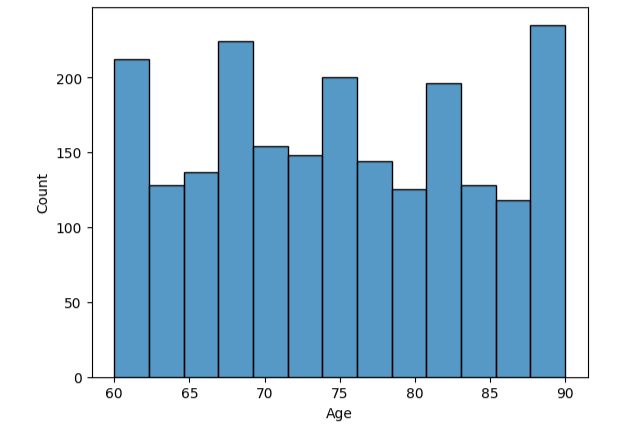
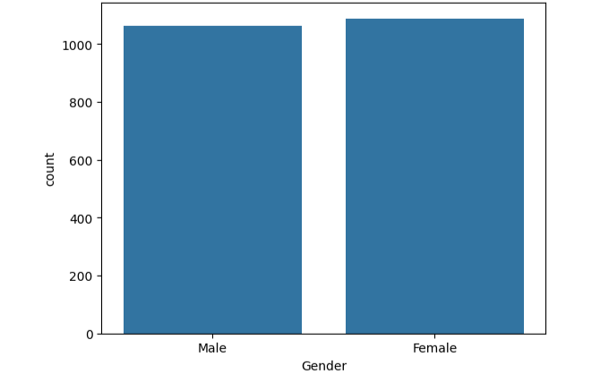
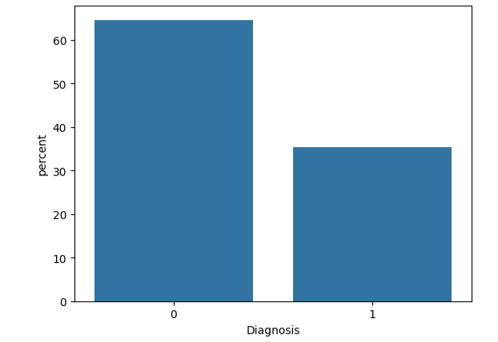

Logistic Regression model to predict Alzheimer's diagnosis
Data sourced from Kaggle.com
The dataset contained the mdeical records of 2149 patients of a mix of ages and evenly split by gender. Those Diagnosed with Alzheimer's represented the minority class.


